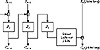
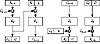

| Previous | Table of Contents | Next |
Some messages have a common header: a letterhead, or a “From” line, or whatever. While block replay would still be impossible, this identical beginning might give a cryptanalyst some useful information.
Prevent this by encrypting random data as the first block. This block of random data is called the initialization vector (IV), initializing variable, or initial chaining value. The IV has no meaning; it’s just there to make each message unique. When the receiver decrypts this block, he just uses it to fill the feedback register and otherwise ignores it. A timestamp often makes a good IV. Otherwise, use some random bits from someplace.
With the addition of IVs, identical plaintext messages encrypt to different ciphertext messages. Thus, it is impossible for an eavesdropper to attempt block replay, and more difficult for him to build a code book. While the IV should be unique for each message encrypted with the same key, it is not an absolute requirement.
The IV need not be secret; it can be transmitted in the clear with the ciphertext. If this seems wrong, consider the following argument. Assume that we have a message of several blocks: B1, B2,..., Bi. B1 is encrypted with the IV. B2 is encrypted using the ciphertext of B1 as the IV. B3 is encrypted using the ciphertext of B2 as the IV, and so on. So, if there are n blocks, there are n-1 exposed “IVs,” even if the original IV is kept secret. So there’s no reason to keep the IV secret; the IV is just a dummy ciphertext block—you can think of it as B0 to start the chaining.
Padding
Padding works just like ECB mode, but in some applications the ciphertext has to be exactly the same size as the plaintext. Perhaps a plaintext file has to be encrypted and then replaced in the exact same memory location. In this case, you have to encrypt the last short block differently. Assume the last block has j bits. After encrypting the last full block, encrypt the ciphertext again, select the left-most j bits of the encrypted ciphertext, and XOR that with the short block to generate the ciphertext. Figure 9.4 illustrates this.
The weakness here is that while Mallory cannot recover the last plaintext block, he can change it systematically by changing individual bits in the ciphertext. If the last few bits of the ciphertext contain essential information, this is a weakness. If the last bits simply contain housekeeping information, it isn’t a problem.
Ciphertext stealing is a better way (see Figure 9.5) [402]. Pn-1 is the last full plaintext block, and Pn is the final, short, plaintext block. Cn-1 is the last full ciphertext block, and Cn is the final, short, ciphertext block. C’ is just an intermediate result and is not part of the transmitted ciphertext. The benefit of this method is that all the bits of the plaintext message go through the encryption algorithm.
Error Propagation
CBC mode can be characterized as feedback of the ciphertext at the encryption end and feedforward of the ciphertext at the decryption end. This has implications having to do with errors. A single bit error in a plaintext block will affect that ciphertext block and all subsequent ciphertext blocks. This isn’t significant because decryption will reverse that effect, and the recovered plaintext will have the same single error.
Ciphertext errors are more common. They can easily result from a noisy communications path or a malfunction in the storage medium. In CBC mode, a single-bit error in the ciphertext affects one block and one bit of the recovered plaintext. The block containing the error is completely garbled. The subsequent block has a 1-bit error in the same bit position as the error.

Figure 9.4 Encrypting the last short block in CBC mode.

Figure 9.5 Ciphertext stealing in CBC mode.
This property of taking a small ciphertext error and converting it into a large plaintext error is called error extension. It is a major annoyance. Blocks after the second are not affected by the error, so CBC mode is self-recovering. Two blocks are affected by an error, but the system recovers and continues to work correctly for all subsequent blocks. CBC is an example of a block cipher being used in a self-synchronizing manner, but only at the block level.
While CBC mode recovers quickly from bit errors, it doesn’t recover at all from synchronization errors. If a bit is added or lost from the ciphertext stream, then all subsequent blocks are shifted one bit out of position and decryption will generate garbage indefinitely. Any cryptosystem that uses CBC mode must ensure that the block structure remains intact, either by framing or by storing data in multiple-block-sized chunks.
Security Problems
Some potential problems are caused by the structure of CBC. First, because a ciphertext block affects the following block in a simple way, Mallory can add blocks to the end of an encrypted message without being detected. Sure, it will probably decrypt to gibberish, but in some situations this is undesirable.
If you are using CBC, you should structure your plaintext so that you know where the message ends and can detect the addition of extra blocks.
Second, Mallory can alter a ciphertext block to introduce controlled changes in the following decrypted plaintext block. For example, if Mallory toggles a single ciphertext bit, the entire block will decrypt incorrectly, but the following block will have a 1-bit error in the corresponding bit position. There are situations where this is desirable. The entire plaintext message should include some kind of controlled redundancy or authentication.
Finally, although plaintext patterns are concealed by chaining, very long messages will still have patterns. The birthday paradox predicts that there will be identical blocks after 2m/2 blocks, where m is the block size. For a 64-bit block size, that’s about 34 gigabytes. A message has to be pretty long before this is a problem.
| Previous | Table of Contents | Next |
){kind=link}
){kind=link}
){kind=link}
){kind=link}